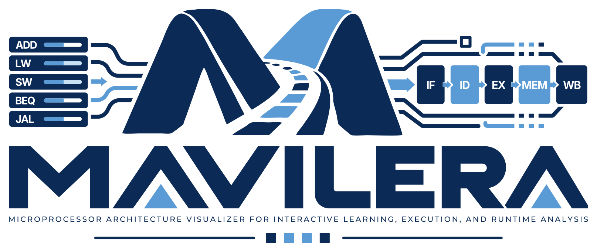

RISC-VAvailable
RV32I with the M extension: assembler, C-subset compiler, and single-cycle, multicycle and five-stage pipelined processors animated on their datapaths.
Address: /mavilera/riscv/


Interactive Microprocessor Architecture Laboratory
Visualize. Execute. Understand.
MAVILERA is an open-source educational platform for exploring microprocessor architecture through interactive simulation, visualization, and instruction execution.
Runs entirely in your browser: no account, no installation, and no program or data is uploaded.

Each architecture is a separate simulator with its own address. Only the available ones can be launched.
RV32I with the M extension: assembler, C-subset compiler, and single-cycle, multicycle and five-stage pipelined processors animated on their datapaths.
Address: /mavilera/riscv/
The simple-as-possible computer: five instructions, sixteen bytes of memory, an accumulator and an adder-subtracter on one bus, each instruction stepped through its six timing states on a drawing of the bus and its controller.
Address: /mavilera/sap-1/
The simple-as-possible computer, version 2: 43 instructions, 64K bytes of memory, a flag pair, CALL and RET, and input and output ports with a keys-and-serial panel; each instruction stepped through its timing states on a drawing of the bus and its controller.
Address: /mavilera/sap-2/
The 32-bit ARM instruction set of Harris and Harris's ARM edition: assembler and instruction-level simulator, and the textbook's single-cycle, multicycle and pipelined processors animated on their datapaths, each with an Extended datapath for the Chapter 7 exercise extensions.
Address: /mavilera/armv7/
Not yet available.
Not yet available.
Not yet available.
These are the activities the laboratories support today.
Assemble a program, then step forwards and backwards, run to a breakpoint or a watchpoint, and see each instruction's effect.
Single-cycle, multicycle and five-stage pipelined processors, animated signal by signal on their datapath drawings.
Registers, memory, call stack, counters and the console, updated as the program runs.
The controller's state diagram, the pipeline diagram, forwarding, stalls, flushes and branch prediction.
Short teaching programs and practice exercises, each opening in the view that shows its idea; a comparison of one program on the three processors.
Each instruction stepped clock by clock through its fetch and execute states on a drawing of the bus, the registers and the controller, with the control word of every state.
Five instructions in sixteen bytes of memory: assemble, step forwards and backwards, run to a breakpoint or a watched register, and encode or decode a byte.
The control signals, the bus and the registers as waveforms and VCD; memory images, traces, a dump of the output, and data files loaded into a program.
Short tasks with tests that run on your program and show expected against actual values.
Forty-three instructions with their timing states, stepped on a drawing of the bus, the registers and the controller, with the microinstruction and the signals of every state.
Sixty-four kilobytes of memory with a read-only region, two flags, CALL and RET, and input and output ports: assemble, step forwards and backwards, run to a breakpoint, and encode or decode bytes.
A panel of keys and a serial switch that feed the input ports, with the output ports shown as bytes and bits; waveforms, VCD, memory images, traces and a dump of the port writes and memory.
Short programs that open in the view that shows their idea, and tasks with tests that run on your program and show expected against actual values.
The 32-bit ARM instruction set one instruction at a time: every instruction conditional, the flags N, Z, C and V, R15 as the program counter, shifted operands, block transfers and subroutines.
The textbook's single-cycle, multicycle and pipelined processors stepped clock by clock, with the controller's states, the hazard unit's forwarding, stalls and flushes, and what each stage does in every cycle.
A design of the laboratory's own for the instructions of the textbook's Chapter 7 exercises, drawn over each processor; critical paths and clock periods from delays you can edit.
Short programs that open in the view that shows their idea, and tasks in three groups, for the base processor, the Extended datapath and the full instruction set, with tests that run on your program.
A simulation is a teaching model; it is not evidence of how a hardware implementation behaves. Tested browsers for this release: Chrome 156, Edge 151. Only the browsers listed were tested.
Download the single-file offline version of the RISC-V Laboratory (1740 kB) · Download the single-file offline version of the SAP-1 Laboratory (706 kB) · Download the single-file offline version of the SAP-2 Laboratory (751 kB) · Download the single-file offline version of the Armv7 Laboratory (1449 kB) · validation record
MAVILERA stands for Microprocessor Architecture Visualizer for Interactive Learning, Execution, and Runtime Analysis. It is written by Sajid Muhaimin Choudhury. The simulators are independent of one another: each has its own execution engine, tests and build, and is deployed at its own address. MAVILERA needs no textbook, course or account.
MAVILERA is a provisional project name, pending legal clearance.